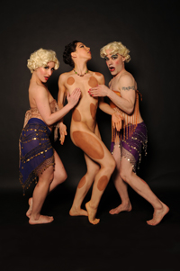

past performance | |
|
KineticArchitecture Presents  *Photographer Peter Madero | |
synopsis:Diaghilesque is a marriage of Ballet Classics and Classic Burlesque-but don’t tell Classic Religion! The lavish and profound gems of Diaghilev’s Ballet Russe are given a Post Modern/Burlesque treatment by KineticArchitecture. Artistic Director Faux Pas aka Rob Davidson is a Dancer, Choreographer, and Drag/Burlesque-Queer-Gender Non Conformist who explores cultural perceptions of what and who is ill-made and hideous. Of the original “L'aprèsmidi d'un faune” Gaston Calmette wrote, "the too-expressive pantomime of the body of an illmade beast, hideous, from the front, and even more hideous in profile," and his paper Le Figaro started a campaign against the ballet. This show is an homage, a send up, and a call to culture done with care and flare! Join us for “Morning After of a Faun”, “ Le Spectre de la Mort de la Rose”, and “La Sylphide Dépouillé”Faux (The Stripped Sylphs) to name a luscious few. Diaghilesque features original choreography by Seán Curran Company alum Faux Pas, “his perky tutu and nipple rings did the trick,” – The NY Times, and the dance artistry of company members Sara Mulry, Allison Kimmel, and Zachary Denison with the Sparkling Trinas: Ayesha Adamo, Kimberly Giannelli, Hyung Ji Yu. KineticArchitecture has cultivated a Buster Keaton meets Butoh style of raw physicality and lush imagery described as "dance, gravity-defying gymnastics, yoga and S & M" -TimeOut NY | |
upcoming performances |
|||
 |
|||
| EVQ Film Festival 2018 August 20-25 |
|||
performance archives |
|||
| 2018 | 2017 | 2016 | 2015 |
| 2014 | 2013 | 2012 | 2011 |
| 2010 | 2009 | 2008 | 2007 |